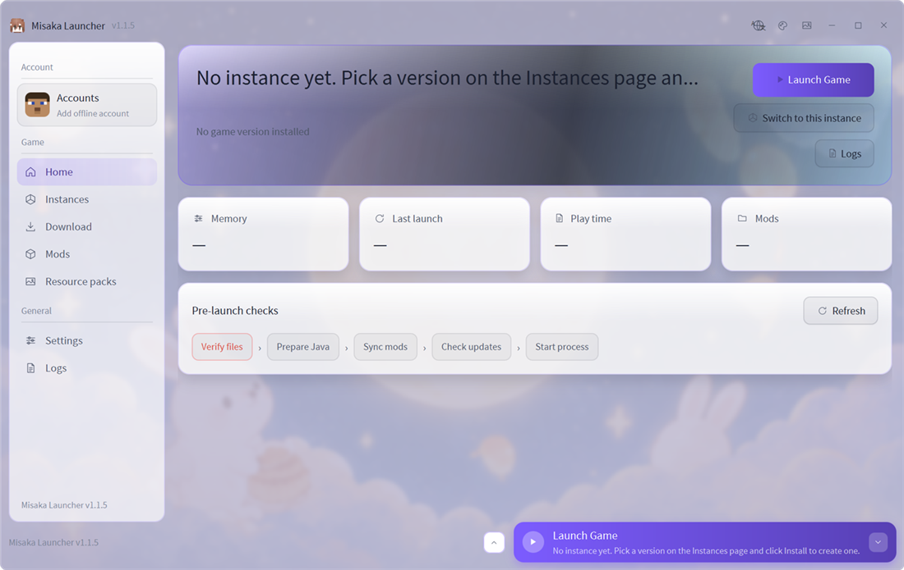

A modern launcher for Minecraft: Java Edition 为 Minecraft: Java Edition 打造的现代启动器
Isolated instances, one-click mod loader and Java setup, Modrinth and CurseForge search, modpack import, and drag-to-reorder resource packs — in a launcher that starts fast and stays out of the way. 实例彼此隔离，加载器与 Java 一键装好；Modrinth、CurseForge 直接检索，整合包可导入；资源包拖拽排序。启动快，也不挡路。

Pick your platform选择你的平台
The Windows build ships with its own Java runtime. The jar builds need Java 17 installed. Windows 版自带 Java 运行时；jar 版本需要本机已有 Java 17。
Downloads are served by GitHub Releases; the file names are stable across versions. 下载由 GitHub Releases 提供，文件名跨版本保持不变。 Checksums and older versions →校验值与历史版本 →
What it does它能做什么
Everything below is in the free build. No launcher account to register, no subscription, no upsell. 下面这些都在免费版里：不需要在启动器里注册账号，没有订阅，也没有内购。
Isolated instances实例彼此隔离
Each instance keeps its own version, mods, resource packs, saves and launch arguments, so one broken modpack cannot take down the rest. 每个实例独立保存版本、模组、资源包、存档与启动参数；一个整合包出问题不会牵连其它实例。
Loaders and Java, handled加载器与 Java 自动搞定
Forge, NeoForge, Fabric, Quilt and OptiFine. The launcher installs the Java runtime the game version actually needs, next to itself. 支持 Forge、NeoForge、Fabric、Quilt、OptiFine；按游戏版本自动安装对应 Java 运行时，放在启动器旁边。
Search Modrinth and CurseForge直接检索两大平台
Popularity ranking, categories, pagination and thumbnails; install straight into the current instance, with update checks afterwards. 热度排序、分类筛选、分页与缩略图；装进当前实例，之后还能检查更新。
Resource packs, reordered by drag资源包拖拽排序
Press and hold the handle to reorder; the list order is the override order. A generated atlas-compat pack stays locked at the end for AMD / Intel GPUs. 按住手柄即可拖动排序，列表顺序就是覆盖顺序。为 AMD / Intel 显卡生成的贴图兼容包锁定在末尾。
Modpack import整合包导入
Import CurseForge .zip or Modrinth .mrpack archives, or install one straight from search results.
导入 CurseForge .zip 或 Modrinth .mrpack，也可直接从检索结果里安装。
Self-update, or none at all可自更新，也可完全关掉
Incremental, hash-checked updates with rollback. Point it at your own server or turn it off — it never phones home on its own. 增量更新、逐块校验、可回滚；可以指向自建服务端，也可以直接关掉，默认不会私自上报。
Your account stays yours账号始终在你自己手里
How Microsoft sign-in works微软登录是怎么走的
Sign-in uses the standard Microsoft identity platform flow (OAuth 2.0 authorization code with PKCE, public client) in your own system browser, then Xbox Live and XSTS, and finally the Minecraft services endpoint to verify that the account owns the game. Only XboxLive.signin and offline_access are requested.
登录使用微软标准流程（OAuth 2.0 授权码 + PKCE，公共客户端），在 你自己的系统浏览器 里完成；随后经 Xbox Live 与 XSTS，最后由 Minecraft 服务端确认账号是否拥有游戏。只申请 XboxLive.signin 与 offline_access。
There is no backend account system. Tokens stay on your machine (DPAPI on Windows, file permissions elsewhere), are never sent to any server we operate, and are redacted from logs and crash reports. 没有自有账号服务器：令牌只保存在本机（Windows 用 DPAPI 加密），不会上传到本项目运营的任何服务器，日志与崩溃报告里的令牌会被脱敏。
Sign-in is the only way into the game: there is no offline mode and no third-party account system. If the launcher reports that its application is not registered, the Microsoft application used by that build has not been approved by Mojang yet — please wait for the approval or use another launcher in the meantime. 登录是进入游戏的唯一方式：没有离线模式，也不接任何第三方账户体系。若提示应用未登记，说明该构建使用的微软应用尚未通过 Mojang 审核 —— 请等待审核通过，或暂时改用其它启动器。
What we never do我们不做的事
- No telemetry, no analytics, no crash reporting to us. 没有遥测、没有统计，崩溃报告不会发给我们。
- No embedded login form — the password is only typed on Microsoft’s page. 不内嵌登录表单，密码只在微软页面上输入。
- No token relaying, no sharing between users, no hiding the game download. 不转发令牌、不在用户之间共享、不代下游戏本体。
- No ownership bypass — accounts without Java Edition are told so. 不绕过正版校验，未拥有 Java Edition 的账号会被明确拒绝。
What you need需要什么
| Windows | 10 or 11, x64. The portable build brings its own Java runtime — nothing to install. 10 或 11，x64。便携版自带 Java 运行时，无需另外安装。 |
|---|---|
| Linux | x64, with Java 17 available. Any desktop with GTK works; the UI is drawn by JavaFX, not a browser engine. x64，需要 Java 17。任何带 GTK 的桌面环境都可以；界面由 JavaFX 绘制，不依赖浏览器内核。 |
| macOS | 11 or newer, Intel or Apple Silicon, with Java 17 available. 11 及以上，Intel 或 Apple 芯片，需要 Java 17。 |
| Account账号 | A Microsoft account that owns Minecraft: Java Edition. Accounts without the game cannot sign in. 一个拥有 Minecraft: Java Edition 的微软账号；未拥有游戏的账号无法登录。 |
Questions people actually ask常被问到的问题
Is this an official launcher?这是官方启动器吗？
No. It is an independent, open-source project (MIT). It does not ship the game and it does not grant access to accounts that do not own Minecraft: Java Edition. 不是。这是一个独立的开源项目（MIT）。它不分发游戏本体，也不会让未拥有 Minecraft: Java Edition 的账号获得访问权限。
Where is my data stored?我的数据存在哪？
Everything lives in the launcher’s own folder (portable by default): instances, mods, saves, Java runtimes, logs and settings. Delete the folder to uninstall; there is no uninstaller and no registry litter. 全部在启动器自己的目录里（默认便携）：实例、模组、存档、Java 运行时、日志与设置。删掉目录即卸载，没有卸载程序和注册表残留。
Can I use my own update server?可以接自建的更新服务吗？
Yes. The update client speaks a small documented protocol (health, check, changelog, chunked download) and points at a configurable base URL; leaving it blank simply disables auto-update. The contract is in the repository under docs/SELF-HOSTING.md.
可以。更新客户端使用一套小而明确的协议（健康检查、检查更新、更新说明、分块下载），地址可配置；留空即关闭自动更新。接口契约见仓库里的 docs/SELF-HOSTING.md。